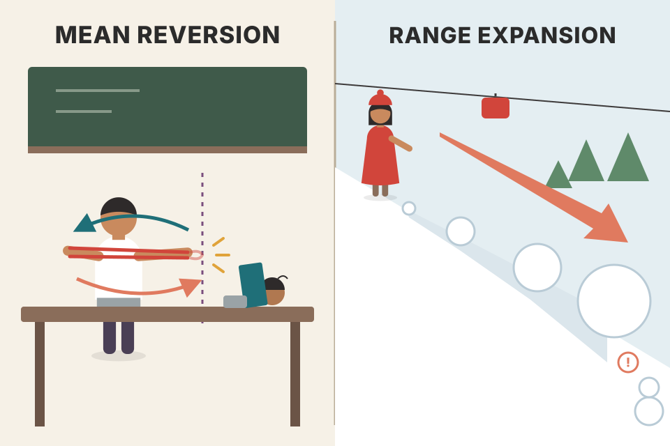
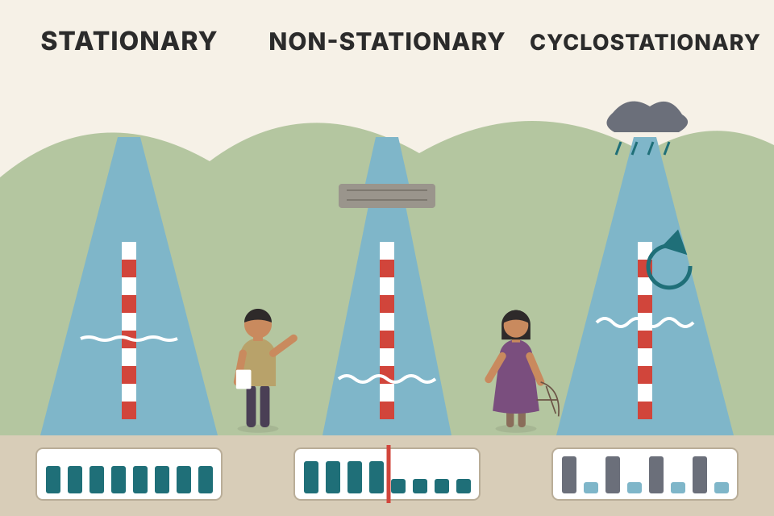
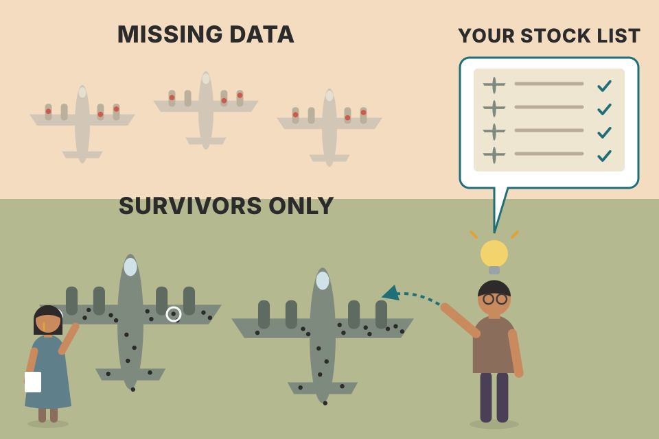
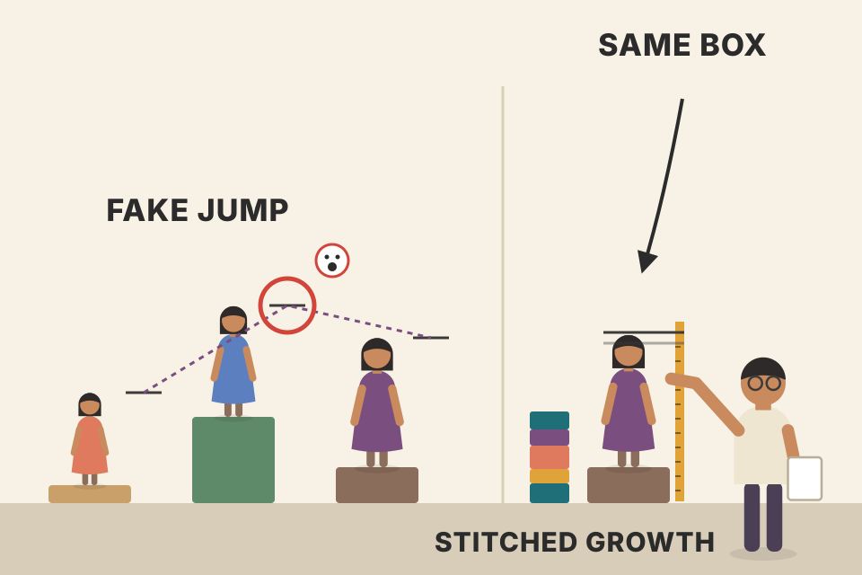

Someone tells you a chart pattern works. On which markets? In which years? Compared to what? Chapter 12 answers these questions before it tests a single pattern. It also explains Pythia, the test method of the next four chapters. All prices on this page are simulated. The only real numbers come from Grimes' tables, and each one is labelled.
Your friend trades stocks. He tells you: "Price always bounces off the 50-day average. I have seen it a hundred times."
Maybe he is right. But ask him three things. On which stocks did he see it? In which years? And how often does price bounce anyway, with no average on the chart at all?
He cannot answer. He remembers the bounces. He never counted the misses.
This chapter is about how to count properly. It tests no pattern yet. It sets the rules of the test, so that the results in Chapters 13 to 16 can be trusted.
Grimes does it in two halves. First he chooses what to test on. That is 600 stocks, 16 futures markets and 6 currencies, over the ten years from 2001 to 2010. He also adds made-up random markets, where no pattern can work. If a pattern "works" there too, the test is broken.
Along the way he names three traps. Markets change over time. Stocks move together, so a huge sample holds less proof than it seems. And dead companies drop out of the list, which makes the past look better than it was.
Then he chooses how to test. His method is called Pythia. It finds every signal, watches the next 20 bars, and compares them with what the market does on any normal day.
His promise is modest. Markets hold only small advantages. You need a careful test and a lot of data to see them.
| Word | What it means, in plain words |
|---|---|
| Test universe | The full set of data a test runs on: which markets, which bar length, which years. |
| Return | The change in price from one bar to the next, as a percentage. A stock that goes from 100 to 101 returned 1%. |
| Basis point (bp) | One hundredth of one percent. So 5 bp is 0.05%. Daily averages are tiny, so they are written in bp. |
| Mean and median | The mean is the plain average. The median is the middle value when you sort all the values. |
| Standard deviation (SD) | The size of a normal swing away from the average. A big SD means a jumpy market. |
| Baseline or drift | What the market does on an average day, with no signal at all. Stocks drift up a little over time. |
| Edge | A real advantage that repeats. Over many trades it beats plain luck and beats the baseline. |
| Stationary | The market's habits stay the same over time. The same average, the same size of swings. |
| Correlation | How much two markets move together. Close to 1 means they move as one. Zero means no link. |
| Survivorship bias | The mistake of studying only the companies that are still alive today. |
| Random walk | A made-up price that moves by pure chance. Each step ignores every step before it. |
| Event study | A test that finds every case of a signal and measures what price did in the bars after it. |
Sections 01 and 02 say why Grimes tests at all. Sections 03 to 08 cover the traps and the test period. Sections 09 to 15 walk through the data, one market group at a time. Sections 16 to 18 explain Pythia. In a hurry? Read section 16 first, then come back.
The chapter is a chain. A test result is only as good as two things: the data it ran on, and the method that made it. So Grimes describes both before he shows a single result.
Each row below is one link in that chain. Read it from top to bottom.
The chapter opens with a line from Blaise Pascal, the French thinker. In short: people pick their beliefs because they like them, not because anyone proved them.
Traders do this all the time. So this part of the book does something different. It takes real market data and checks ideas with numbers. That is all quantitative means here: counting and measuring, not guessing.
Grimes says the work has at least two goals:
Grimes adds a sharp remark. If more traders did this work themselves, far fewer would lose money in two ways. One is trading support and resistance at moving averages. The other is trading off meaningless Fibonacci ratios.
Those two tools need a quick introduction. One word first. A trend is a market that keeps moving mostly one way for a while.
A moving average (MA for short) is the average price of the last few bars, worked out again on every bar. Support is a price where a fall is supposed to stop. Resistance is a price where a rise is supposed to stop.
Fibonacci ratios are famous numbers, such as 38.2% and 61.8%. Many traders draw lines at these levels on a chart. Those two examples are mine. This chapter does not list the numbers.
The coming chapters test both tools:
That Fibonacci verdict is a heavy one. It throws serious doubt on any trading system or method built on these "magical" ratios.
Grimes uses a very large sample covering a decade of data. A sample is the set of data you study. In that sample, moving averages do not act as significant support or resistance.
He also tests the ways many systems define a trend. One is the moving-average crossover, where a fast average crosses a slow one. Another is the slope of an average, which means whether it points up or down.
He ends with one simple but strong use of moving averages. It may lower portfolio volatility for longer-term investors. Volatility is how much prices jump around.
The first part of the research goes against common errors. But Grimes says it matters far more to know what really works.
So the research closes with a high-level look at the two main ways a market behaves. It shows statistical evidence that price does not move purely by chance under specific conditions. The next section covers those two ways.
A drug trial. Lots of people "know" a home remedy works. They took it and got better. A trial asks the boring questions first. Compared to what? In which patients? Over how long? Could chance alone explain it?
Chapter 12 is the trial plan. Chapters 13–16 are the trial results. Where the picture breaks: a drug trial can give half the patients a sugar pill. Nobody can re-run the market's history with a sugar pill, so Grimes builds fake random markets to play that part.
The verdicts in the right box are Grimes' own summaries from this introduction. The evidence for each is in Chapters 13, 14 and 16. S/R is short for support and resistance.
Why do untested beliefs live so long? Think about how you look at a chart.
When a level "works", the chart shows it clearly. Price touches the line and turns. You remember it. When the level fails, price slides through and nothing stands out. You hardly notice.
So your memory acts like a filter that keeps only the hits. To beat the filter you must do two things. Count every case. And compare with what price does anyway, with no line on the chart.
A test with numbers removes the filter. It counts every case, the dull ones too.
This is also why Grimes wants the study designed with care first. A careless test is the same filter in a smarter-looking suit.
murphy_moving_averages.md and the Murphy Chapter 9 page treat MAs as trend tools. Grimes' claim is narrower. He does not say MAs are useless. He says price does not respect them as support or resistance more than chance would.Stretch a rubber band and let go. It snaps back. Push a snowball down a hill. It keeps rolling and grows.
After a big move, a market can do either. Grimes' research ends on these two kinds of behaviour. He calls them the two main modes:
The two are opposites in many ways. So Grimes promises three things:
He adds a point for discretionary traders. Those are traders who decide by eye, not by fixed rules. Even their methods must stand on a solid base of market behaviour that is statistically significant.
Statistically significant means a result too big to blame on luck alone.
Then comes a list of warnings. Any answer you get is specific to the data set you studied. And a result may say as much about your technique as about the data. So tests must be built and specified properly.
You hope the results carry over to other markets and other periods. That is more likely if the tests and the test universe are well built. But you never have absolute truth. Three things can go wrong:
At best, well-built tests guide you to a better understanding of how markets act. Much always stays unknown.

A rubber band and a snowball. Stretch the band, which is a big move, and it snaps back. That is mean reversion. Push a snowball downhill, also a big move, and it picks up more snow and rolls further. That is range expansion.
A real market can act like either one, at different times or in different conditions. So the research asks when each one shows up. Where the picture breaks: a band always snaps back and a snowball always rolls on. A market only leans one way a little more often than not.
Now try it. The slider below sets how much today's move "remembers" yesterday's move.
Left to right: day 0, the close of the big day, to day 10. Up and down: the average total move after the big day. It is counted in standard deviations (SD). One SD is the size of a normal day's swing.
The big day itself, 2+ SD, is left out. That way you see only what follows it. Each draw uses 40,000 simulated days. φ is my own knob, not a number measured from a market. In the readout, SE means standard error. It is how far luck alone could move an average.
This simulation is mine. It is not in the book.
Each simulated day's return has two parts. One part is a fixed share of yesterday's return. I call that share φ (the Greek letter phi). The other part is fresh random noise.
Set φ below zero. Now a big up day tends to be followed by a small down day. The average path after big up moves bends back. That is the rubber band.
Set φ above zero and the path keeps going. That is the snowball.
At φ = 0 the market is a random walk. Each day ignores the day before. The path after a big move is flat, apart from noise.
Real markets do not run on one fixed φ. Chapter 16 measures which mode shows up under which conditions.
Also notice how small the effect is, even at |φ| = 0.1. The next day gives back or adds only a tenth of the big move. That is the size of edge to expect.
backtest_results_summary.md).A cook tests a new recipe in one kitchen, on one stove, in one season. It tastes great. Will it work in your kitchen?
A trading test has the same problem. One of the most important choices in any market study is the universe. That is the set of data the tests run on. It has three parts:
Most traders believe that "everything trades the same". If a pattern works on stocks, it should work on futures and forex too. Futures are contracts to buy or sell something at a later date. Forex is the market for currencies.
Grimes asks: how do they know this? And is it even true?
He says you should find yourself asking that question all the time. How do they know that?
There is only one way to answer. Build tests that let you see three things. Does the tendency hold in different markets? Does it hold on different timeframes? Has it been stable over time?
Choosing the test universe well is the first step.
A recipe tested only in one kitchen, on one stove, in one season. Maybe it works everywhere. Maybe it depended on that stove. You find out only by cooking it in other kitchens.
Composition, timeframe and period are the three "kitchens" a trading idea has to be cooked in. Where the picture breaks: a kitchen stays the same from year to year. A market does not, as the next section shows.
This simulation is mine. It is not in the book.
I built three made-up "asset classes". An asset class is a group of similar markets, such as stocks or currencies. Each one hides a different behaviour:
Each class has 20 markets of 2,500 days. The rule is the same everywhere: buy after a day that closes down. I judge it by the next day's return minus that class's average day. That leftover is the excess.
The bars show the excess. The thin whiskers show ±2 standard errors. A standard error tells you how far luck alone could move the average.
In A the rule earns. In B the very same rule loses. In C it is zero, within noise.
Pool all three together and you get a blurred average that describes none of them. That is why Grimes tests each asset class on its own.
backtest_results_summary.md).Think of a river. Some rivers look the same every year. Others changed for good when a dam was built upstream. Markets can be like either river.
The maths word for "keeps its habits" is stationary. Grimes calls it one of the main questions when you study markets with numbers: are asset returns stationary? An asset is anything you can trade. Its return is its price change in percent.
Here is the meaning, slightly simplified. A stationary process is a random process whose probability distribution does not change over time. The maths word for random is stochastic. A probability distribution is the full list of what can happen and how likely each result is.
What would that look like in market data? You study the same market over different periods. If returns were stationary, two things would not shift:
Academics argue a lot about whether returns are stationary. From a trader's point of view, Grimes says, they do not seem to be. He gives two examples:
These are large changes in structure. After them, the asset really does trade very differently.
The book adds a note. Some processes are cyclostationary. They look stationary except for one part that repeats in a cycle or a season, in a fairly predictable way.
Anything predictable can be taken out of the data. Grimes calls this "backing it out". Do that, and the cyclostationary data turns into a stationary set.
He names two real examples that might have a strong seasonal part: retail sales, and the volatility of natural gas prices.

A river gauge. A stationary river has the same typical level and the same size of ripples every year. A non-stationary river was dammed upstream in year five. After that its level and ripples are different, for good.
A cyclostationary river floods every monsoon and is calm in winter. Once you know the calendar, you can subtract the season. What is left is steady. Where the picture breaks: you can see a dam being built. In a market, nobody announces the change.
The chart above is my simulation. It has two panels.
The top panel shows each simulated day's return. The bottom panel shows two lines. One is the average of the last 60 days, called the 60-day rolling mean. The other is the 60-day rolling standard deviation, which is the usual swing size over those 60 days.
Stationary. Both lines wander a little. That is only sampling noise, the luck of which days fell in the window.
Non-stationary. I change the rules halfway. The first half is calm and rises gently. The second half is two and a half times as volatile and falls. The rolling lines jump to a new level and stay there.
Cyclostationary. Volatility swells and shrinks on a 250-day cycle.
Now tick "remove the known seasonal part". The page divides each return by its known seasonal volatility. The rolling SD goes flat again. That is Grimes' point: a predictable part can be backed out.
A change in structure cannot be removed that way. Nobody knew the date of the dam in advance.
trading_equations.md §12). GARCH is a model where volatility changes from day to day but keeps returning to one long-run level. It sits in the middle of these three pictures.Visit a city for one July and judge its weather. You would say it never rains there. One short window shows you one kind of weather.
Markets have weather too. Because returns are non-stationary, no technical method is sure to stay valid for ever. A technical method is one that trades from price charts. So any trading edge should be checked over a period long enough to judge if it is stable.
Results change a lot with the period you pick. Grimes names three kinds of period:
Anyone who does analysis has to take this into account.
Grimes then complains. Too many tests shown to the public were run on only the last year or two of data. Such tests may be useful if the future looks like those recent years. But that is a thin assumption to build a trading programme on.
Judging a city's weather from one July. You would conclude it never rains. Ten years of records tell you about monsoons, droughts and cold snaps. They also tell you if "sunny" is the rule or only one season.
Where the picture breaks: weather seasons come back on a calendar. Market seasons come back with no timetable at all.
This simulation is mine. It is not in the book.
I generate ten years of prices, which is 2,520 days. The market switches between two regimes. A regime is a stretch of time when the market behaves in one way. One regime trends (φ = +0.12). The other reverts to the mean (φ = −0.12). Each lasts one to three years, picked at random.
The rule holds yesterday's direction, or the opposite if you choose "fade".
Look at the five two-year bars. The rule can be strongly up in one window and strongly down in the next. A trader who tested only the latest window sees one bar and believes it.
The ten-year bar averages the regimes. So it sits between the extremes. It mostly tells you how the years happened to be split between the two regimes. It describes no single window.
Nothing about the rule changed. The market under it changed.
backtest_results_summary.md).Ask 1,000 people if it is raining. All 1,000 stand under the same umbrella. You get 1,000 answers. How many facts did you learn? About one.
Stock data has this problem. Assets and asset classes are correlated to different degrees. Correlated means they tend to move together.
In times of financial stress, you often see everything move the same way. Grimes lists coffee, cocoa, crude oil, stocks and even gold futures. All of them can be crushed on the same day.
Many standard statistical methods make one assumption: events are independent. That means one event tells you nothing about another.
Now take a set of 1,000 stocks. On one day, more than 800 of them may make large moves in the same direction. That breaks any sensible meaning of independence.
So be aware of two effects:
Grimes gives his own numbers. His stock sample holds more than 1,380,000 trading days. But because of correlation, these are not 1,380,000 independent events.
Polling 1,000 people about the weather, but all 1,000 are standing under the same umbrella. You got 1,000 answers and roughly one piece of information. Stocks on a crash day are standing under one umbrella.
Where the picture breaks: stocks are never fully under one umbrella. Each still has a little weather of its own.
This part is not in the book. I added it.
Each simulated stock's return is the sum of two shocks. One is a "market" shock that every stock shares. The other is the stock's own. The slider ρ (the Greek letter rho) sets how much is shared. It is the correlation between any two stocks.
At ρ = 0, about 50% of the stocks rise each day, and that share hardly changes. As ρ grows, whole days tip to one side. On some days 80–90% of the stocks rise or fall together. That is what Grimes describes.
A standard formula puts a number on the lost information. Take N series that all share the same correlation ρ. Their average behaves like a smaller number of independent series, called Neff:
With 1,000 stocks and ρ = 0.3, that gives about 3.3.
So adding stocks barely helps once ρ is above zero. Adding time does help, because more days are more independent events.
This is my rough model, not Grimes'. Start with his sample: 1,381,685 stock-days from 600 stocks.
Now suppose the average pairwise correlation were 0.3. Pairwise means between any two stocks. Then the 600 stocks act like very few independent ones:
So the sample behaves more like 7,600 independent days than 1.38 million.
The real figure depends on the true correlation, which also rises in a crisis. But the rough size is the point. A huge sample can be statistically modest.
So far you have met the traps. Markets change. Stocks move together. What does Grimes do about it?
For the tests in this book, he tries to handle these problems in three ways:
Here is what goes in:
Every test was also run on a set of random price models. Grimes calls them stochastic models, and he uses them for calibration. That means checking that the measuring tool reads zero when there is nothing to measure.
There are three:
That needs unpacking. Grimes explains the notation. "i.i.d. ~" means independent and identically distributed according to the distribution named after it. In plain words: every day is a fresh draw from the same hat, and no draw affects another.
Normal is the bell curve. Most days are small and huge days almost never happen.
The second model uses real Dow days as the hat. It draws real days at random, in a shuffled order.
GARCH is a model where wild days come in clusters. The box below shows all three.
The random models are a placebo group, the patients who get a sugar pill. If a "signal" shows an edge on random data too, the method made it up. It is not a property of markets.
Three different placebos guard against three different false alarms: plain noise, fat tails, and volatility that clusters. Where the picture breaks: a sugar pill is truly empty. A random model is only empty of the patterns its maker left out.
The chart is my simulation. All three models have the same average daily volatility, 1%. They differ in two ways: fat tails and memory.
Fat tails means huge days happen more often than the bell curve allows. The readout measures this with excess kurtosis. Near 0 means no fat tails. Well above 0 means fat tails.
Normal. No fat tails, so excess kurtosis is near 0. And no memory.
Resampled history. I cannot ship Dow data on this page. So I simulate a fat-tailed "history" of 7,500 days. Then I draw days from it at random, with replacement. That means a day can be drawn more than once. This is the procedure Grimes describes.
It keeps the fat tails of the real distribution. Excess kurtosis is well above 0. But it destroys the order of the days, so big days do not cluster.
GARCH. Today's variance depends on yesterday's surprise and on yesterday's variance. Variance is the standard deviation squared. So wild days bunch together.
Look at the lower panel, and at "|r| lag-1 autocorrelation" in the readout. Autocorrelation is how much a series resembles itself one step earlier. Here it asks: does a big day follow a big day? It is clearly positive only for GARCH.
Real markets show both fat tails and clustering. A signal that "works" on any of these three models is fooled by noise.
trading_equations.md §12 has the GARCH(1,1) formula. My GARCH here uses α = 0.08 and β = 0.90, inside the typical ranges in your note.price_physics_basics.md records that GARCH helped little in your tests. It forecasts the shaking, not the direction.You test-drive a car. The route has a motorway, a traffic jam and a mountain pass. It has no off-road track. Did you test the car? Mostly. And you know what you skipped.
Grimes picks his test period the same way. All tests in this part run from 1/1/2001 to 12/31/2010. He gives these reasons:
The three stretches for equities:
Grimes accepts one fair criticism. The decade holds no large secular bull market. That is a rise that lasts many years. And such a market is probably what many stock traders care about most.
His answer: you can repeat these tests on other periods and check that the results agree.
One more thing is worth knowing. These 10 years held some dramatic changes for nearly all of these assets.
Many markets moved from open outcry to electronic trading. Open outcry means traders shouting orders to each other in a pit.
Others, such as US stocks, were electronic already. Their electronic marketplaces matured and evolved. They went through big changes in regulation and structure.
The edges of the bands are rough. Grimes names the phases, not exact dates.
A car test drive that includes a motorway, a traffic jam and a mountain pass, but no off-road track. You learn a lot, and you know exactly what you did not test.
Where the picture breaks: you can drive the missing track next week. Nobody can order a missing kind of market on demand.
The choice is a trade-off. You want data that is relevant. You also want data that covers many kinds of market. You cannot have the most of both.
Older data covers more kinds of market. But it may describe a market structure that no longer exists: pits, wide spreads and slower news. A spread is the gap between the buying price and the selling price.
Recent data is relevant. But it may cover only one regime.
Grimes picks ten recent years that still hold three different regimes for stocks. And he says openly what is missing. So a reader knows where the results may not apply.
The move to electronic markets is itself a non-stationarity, as in section 04. The same contract may trade differently before and after.
How do you pick a fair jury? Not the first 200 names on the phone list. They would all start with "A". You sort people into groups, then draw names from a hat inside each group.
Grimes picks his stocks like that. First, three words. A ticker is the short code a stock trades under. Market capitalisation, or market cap, is the value of all of a company's shares added up. An ETF (exchange-traded fund) is a fund that trades like a stock.
Here is how the stock sample was built:
A note on step 3. The sentence in the book is missing its verb at this point. Taking these out is clearly what it means.
Grimes notes that nearly 8,000 tickers are listed, but only a few thousand of them trade actively. Many of the very small stocks are extremely illiquid. That means hard to buy or sell, because few people trade them.
Some go days or weeks without a single trade. That is probably why the break points stop at the 2,500th name. The book does not spell that out.
Table 12.1 breaks each tranche down by industry, across eleven groups. One large-cap company was classed as a conglomerate, a company in many businesses. It is missing from the count. So the large-cap column adds up to 199, not 200.
Services and Financial are the two biggest groups in every tranche.
In general, smaller stocks trade less actively. They also get less public attention. So they are usually less liquid, and they often trade more erratically than their large-cap cousins.
Grimes' sample shows this clearly. The measures of dispersion are a good deal larger in the mid-cap and small-cap tranches. The next section has the numbers.
Smaller stocks are known for one more thing. They tend to beat large caps, with higher average returns. Academics call this well-known oddity the size effect.
The usual explanation: smaller companies carry more risk, so investors demand a higher return to hold them.
Grimes does not claim a full study of the size effect. But he finds it interesting that his samples show no evidence of it. Section 11 explains why.
Picking a jury. You do not take the first 200 names on the phone list, which would all start with "A". You split the population into groups you care about. Then you draw at random inside each group, so nobody's favourite stocks sneak in.
Where the picture breaks: a jury list holds people who are alive today, and that is fine. A stock list of today's survivors hides the dead ones, and that is not fine.
Random sampling inside tranches does two jobs.
Inside each tranche, it stops the researcher from choosing stocks that "look" tradable. People do that even without meaning to.
Across tranches, it gives equal weight to large, mid and small companies. A cap-weighted index would not. An index is one number that tracks a basket of stocks. In a cap-weighted one, bigger companies count for more, so the biggest names dominate.
The industry table is a sanity check. It shows that the random draws did not produce something lopsided, like a small-cap sample that is half biotech.
The weak point is step 1. The ranking uses market cap on the last day of the test period. Section 11 shows what that does.
Here is a number to hold on to. On an average day, an average stock in this sample rose about 0.06%. On a normal day it also swung about 2.5% up or down. The climb is tiny next to the shaking.
Table 12.2 holds the simple statistics of daily returns for the stock universe. It gives them for all stocks together and for each tranche.
Many of these numbers are very small. So the book prints them in basis points, not percentages. One basis point is one hundredth of a percent:
Grimes' reason: for most people, a number like 2 is much easier to read than 0.0002.
| Table 12.2, daily returns | All stocks | Large-cap | Mid-cap | Small-cap |
|---|---|---|---|---|
| Total trading days | 1,381,685 | 484,002 | 454,649 | 443,034 |
| Mean | 5.6 bp | 5.2 bp | 5.9 bp | 5.8 bp |
| Median | 2.3 bp | 2.5 bp | 3.4 bp | 0.8 bp |
| Standard deviation | 248.7 bp | 230.8 bp | 246.2 bp | 270.9 bp |
| Interquartile range (IQR) | 227.2 bp | 215.3 bp | 223.5 bp | 244.0 bp |
| Coefficient of variation | 44.4 | 44.8 | 41.4 | 47.1 |
| Up% | 50.07% | 50.21% | 50.43% | 49.56% |
| Unchanged% | 1.42% | 1.15% | 1.46% | 1.66% |
| Down% | 48.51% | 48.64% | 48.11% | 48.78% |
Pick a statistic below to compare the tranches side by side.
An average day moved an average stock in this sample up about 0.06%. The typical day-to-day swing, one SD, was about 2.5%. The drift is a whisper under a shout: roughly 1/44 of the noise.
That ratio is exactly what the coefficient of variation measures. Where the picture breaks: a whisper under a shout is lost for good. The market's whisper adds up day after day, while the shouts partly cancel out.
This reading of the table is mine. It is not in the book. A few things stand out.
Remember the puzzle from section 09. Small stocks are supposed to beat large ones, yet Grimes' sample shows no such thing. Why?
He answers plainly. The sample, no doubt, suffers from survivorship bias. That is the mistake you make when you study only what is still alive at the end.
Think about how a stock lands in each group:
The market-cap slices were taken at the end of the trading period. So the "large" group is full of past winners, and the "small" group is full of past losers. Grimes says this is a likely reason the classic size effect is missing.
He gives a comparison. Suppose he had sorted by market cap in early 2009 and then followed the returns forward. He would almost certainly have seen small caps beat large caps dramatically.
For the tests in this book, Grimes says no. But for many other kinds of test, it needs careful thought.
Suppose you really cared how stocks of different sizes trade. One way to make up for survivorship bias is a dynamic universe. You draw the sample again and again, say every six months. Each time, you use the market-cap rankings as they stood on that date.
His example:
This is slow, tiring work. But for some kinds of study it may be the only way to correct the bias.
Grimes wants you to be clear on one point. His own tranches were made by looking back. He accepts that, because the goal was to understand stocks as a whole. He did not want to focus too much on the size groups. So it was not a significant limit for these tests.
There is one more factor. The test universe was built from stocks that were trading as of 12/31/2010. So two kinds of company are missing:
This adds survivorship bias that could distort or change the results.
It matters most for traders who build rule-based trading systems. For them the impact can be very large. It can even make unprofitable systems look very good in a backtest, a test of rules on old data.
For rough tests of price tendencies, like the ones in this chapter, it may matter less. But Grimes warns that survivorship bias cannot be dismissed quickly or casually.

This famous story is not in the book. In the Second World War, engineers studied bullet holes on returning bombers. They proposed adding armour to the areas that were hit.
The right answer was the opposite. Add armour where returning planes had no holes, because planes hit there never came back. Your stock list is the returning planes. Where the picture breaks: a lost plane only hides bad news. A missing stock can also hide good news, such as a rich takeover.
The simulation below builds a size effect out of nothing. Change how the size groups are formed and watch it appear and vanish.
This simulation is mine. It is not in the book.
I make 3,000 made-up stocks. Their starting sizes span a 10× range. Each gets 10 years of monthly returns. The average return is exactly zero for every stock. Smaller stocks are more volatile.
Two things can remove a stock:
Those premiums add roughly +0.3% a year on average. That is the only true return in the model. There is no size effect and no edge anywhere. I built it that way.
Rank by end cap. Sort the survivors by their size at the end. The "large-cap" tranche shows a big positive return. The "small-cap" tranche shows about nothing. The ranking picked the winners after the fact.
It even turns the textbook size effect upside down. Grimes suspects the same thing happened in his sample.
Rank by start cap. Sort by size at the start, and include dead stocks up to their death. Every tranche is near zero, as it should be.
Dynamic. Re-sort every six months, using only what was known at the time. This also lands near zero.
The "survivors only" bar shows the general case. Drop the dead, and the average rises for everyone.
backtest_results_summary.md).No study covers everything. Grimes lists several ways his stock research could be taken further. Each one is a place where his results may hide a difference.
On the first two, Grimes is frank. There may be important differences in the numbers that his tests did not catch. The tests did not split the stock groups by these factors, or by others.
Do not assume that a large number of stocks, taken together, behave like an index. Traders who focus on index products should probably run similar research on the indexes themselves.
But research done only on indexes has its own weak spots. Grimes names a few of the most common:
Microstructure is the fine detail of how trades happen. Nonsynchronous trading means the stocks in the index did not all trade at the same moment. Some prices are fresh. Some are old.
So the advice runs both ways. Even traders who stick to index products do much better work when they understand the single stocks inside the index.
An index is a class photo taken with a slow shutter. Some kids moved during the exposure, some did not. The photo is real. But it is not the same as 50 sharp portraits, and the blur has its own patterns.
Where the picture breaks: a blurred photo looks blurred. An index chart looks perfectly sharp, so nobody suspects the blur.
This part is not in the book. Grimes only names nonsynchronous trading. Here is how it works.
I simulate 40 stocks. Their true returns have no memory at all. Today's move says nothing about tomorrow's.
On any day, each stock has some chance of not trading. Then its last price goes stale, which means out of date. The move it missed shows up on the next day it trades.
The index is built from the last traded prices. So it takes in part of today's market move today, and the rest over the following days.
The result is positive autocorrelation in index returns. Today's index move looks a little like yesterday's. It is a "trend" that nobody could trade, because the stale prices were not really on offer at those levels.
Set the slider to 0 and the effect vanishes. This is one reason why research on an index alone can mislead.
backtest_results_summary.md). Grimes' advice is to study the single stocks too.A futures contract is a deal to buy or sell something at a set later date. That something can be gold, wheat or a stock index. Each contract has a delivery month, and it ends, or expires, then.
Grimes says choosing a futures universe was more complicated than choosing stocks. Here is one reason.
The S&P 500 futures contract is one of the most active futures markets. It is based on the S&P 500 index, which is a basket of stocks. Many of those stocks are already in the stock sample. So there is overlap, and you need to be aware of it.
But Grimes could not drop this market. It is the main focus of many futures traders.
He says 16 markets were chosen to stand for six groups. The picture below shows the list he gives.
Two kinds of market are left out on purpose:
In the picture, "softs" are farm goods that are grown, not mined, such as coffee and cotton.
Futures have one more problem. Contracts are listed for delivery in many months and years, sometimes many years ahead. But nearly all the trading is in only a few of them. One is the current contract, the front month. The others are a very small set of specific delivery months.
As one contract nears expiry and delivery, futures traders move to the next one. This move is the roll.
Here is the trouble. For a number of reasons, the contracts trade at different prices. So you cannot join front-month contracts end to end to make one price history. If you do, the chart shows a price move that never happened. This distortion is usually also called the roll.
The fix has two steps:
Table 12.3 gives the basic statistics of daily returns for the futures group.
| Table 12.3, futures daily returns | Value |
|---|---|
| Sample size | 40,104 |
| Mean | 2.7 bp |
| Median | 3.5 bp |
| Standard deviation (SD) | 144.0 bp |
| IQR | 141.6 bp |
| Coefficient of variation | 52.6 |
| Up% | 50.59% |
| Unchanged% | 1.72% |
| Down% | 47.70% |

Measuring your height by standing on a different box each year. Glue the readings together and you "grew" 20 cm in a day whenever you changed boxes.
The honest method measures only how much you grew while standing on the same box. Then it adds those growths up. Where the picture breaks: a box stays the same height all year. A futures contract's gap to the real price shrinks as it nears expiry.
This model is mine. It is not in the book.
The spot price is the price of the real thing today. I price each contract at spot plus a carry. Carry is my plain stand-in for storage and interest costs. It shrinks as the contract nears expiry.
Contracts expire every 63 trading days. Dashed lines mark the rolls.
Chained front month (amber). This line jumps on every roll day, because the new contract sits higher or lower than the old one. A test based on returns would read each jump as a real one-day move. Yet nobody earned it.
Between rolls, the contract sags back toward spot as the two come together. So over months the chained line hugs spot. It hides what a holder really made.
Continuous returns (teal). On each day this line uses the return of one single contract, from yesterday's close to today's. So a roll day adds only the new contract's own move.
With positive carry, the teal line falls below spot. That gap is the real cost of rolling a long position (one you bought) when later contracts cost more. The chained line hides it.
Set carry to 0 and all three lines sit on top of each other.
A currency has no price of its own. You can only say what it is worth in another currency. So a currency rate always states the value of one currency against another. The two together are a pair.
Many currency pairs trade today. But a great number of them are illiquid. They have large spreads and little trading for most of the day.
So Grimes keeps the forex universe small. He gives three aims:
The tests avoid cross rates. A cross rate is a pair that does not include the US dollar. They use only six currencies against the US dollar: Australian dollar, Canadian dollar, Swiss franc, euro, British pound and Japanese yen. The book lists the euro as "Eurocurrency".
Solid lines: the six pairs tested. Dashed line: one example of a cross rate, left out. Seven currencies make 21 possible pairs. Only the 6 dollar pairs are used. The counting is mine.
Table 12.4 gives the summary statistics of daily returns for this universe.
| Table 12.4, forex daily returns | Value |
|---|---|
| Sample size | 15,570 |
| Mean | 1.7 bp |
| Median | 2.1 bp |
| Standard deviation (SD) | 69.1 bp |
| IQR | 76.8 bp |
| Coefficient of variation | 40.2 |
| Up% | 51.00% |
| Unchanged% | 0.87% |
| Down% | 48.13% |
Grimes adds a remark, looking only at the numbers. The currency markets often look much more like random walks than his other samples do. He offers reasons that seem fair to assume:
Arbitrage is trading that removes a price gap the moment it shows. Tightly arbitraged means such gaps vanish almost at once.
The third reason is true in other markets as well. But speculation is a smaller slice of the activity in currencies than in most other asset classes. Speculation is trading to profit from price moves.
The most crowded fishing spot in the world. With that many skilled boats, any easy fish was caught long ago. What is left looks random to a newcomer.
Where the picture breaks: fishing boats all want fish. Many currency traders are not hunting profit at all. An importer only needs dollars to pay a bill.
Double counting. A cross like EUR/JPY is EUR/USD combined with USD/JPY. So its daily return is nearly the difference of two dollar-pair returns that are already in the sample.
Adding the cross would count the same moves twice. It would also fake extra independence, the problem from section 06.
Closer to random. This is my reading of the tables, not Grimes'. The IQR ÷ SD ratio is a quick gauge of fat tails. For a normal curve it is 1.349. Lower means fatter tails.
Stocks come in at about 0.91, futures at 0.98 and forex at 1.11. So forex has the thinnest tails of the three. That fits Grimes' remark.
Forex also has the smallest SD by far. It moves about 0.7% a day, against about 2.5% for a single stock.
Look at clouds for a minute and you will find a face. Your eyes are built to find shapes. They do the same thing on a price chart.
That is why Grimes ran every test on a number of random walk models as well. Those tests show no trading edge, as you would expect. None is possible in a random market. So he does not print those results.
Then why spend the time and energy? He gives his belief in two parts:
If you have built a good testing framework, this is easy. You feed it randomly generated data along with real market data and compare. This begins to build a kind of intuition that cannot be built in any other way.
Grimes says the most important ideas are probably the basic concepts behind two things. One is the random walk. The other is the binomial tree. That is a model where, at each step, price takes one of two branches: up or down.
Get a good grasp of these, and you can run many interesting experiments in Microsoft Excel. Excel is not ideal for work with numbers like this. But it is good enough for many uses. It is also found everywhere and fairly easy to use.
You meet one problem early. The random number generator in Excel, the =RAND() function, has some fairly serious limits.
All random numbers made by computer code should really be called pseudo-random. Pseudo means "not quite real". The code that makes them will, in the end, start repeating the same sequence.
Grimes says Excel's built-in generators repeat after only a few million numbers. You hit this limit sooner than you might expect when you generate fairly long price histories. It comes sooner still if each bar needs an open, a high, a low and a close.
His advice: if you are going to use Excel, it is worth your time to find a better random number generator.
The tests in the book use MT19937. It is one version of the Mersenne Twister algorithm, developed by Matsumoto and Nishimura in 1997. The book prints the second name as "Nashimura".
It is a high-quality pseudo-random generator. Its numbers are uniformly distributed, which means every value is equally likely. They pass most statistical tests for randomness.
It also has a very long period. The period is how many numbers come out before the values repeat. Grimes gives it as the 219,937 value. He describes that as a 1 followed by about 5,800 zeros, and calls it a big number.
That would get you through a lifetime of testing nearly any financial idea you can imagine.
This box is not in the book. I added it.
The period. The exact period of MT19937 is 219937 − 1. That number has 6,002 digits. You can check it: 19,937 × log102 ≈ 6,001.6. So "about 6,000 zeros" is closer than 5,800. Either way, it never runs out in practice.
Excel. Grimes' remark describes older versions. Microsoft reports that RAND has used the Mersenne Twister since Excel 2010.
Check your own version before you rely on either statement.
Have you never done serious work with randomly generated data? Grimes suggests a good place to start. Generate random charts and look at them as if they were price charts.
It is highly subjective. But most traders are very surprised. Many of the patterns they look for in the market also appear in random data.
To get you started, he gives step-by-step instructions for Excel. They build a simple random walk. Its returns follow a normal distribution with a mean of 0% and a standard deviation of 1%.
A few notes on the steps. In step 4, the fill handle is the little black bump at the lower right corner of the selection box. In step 5, you select the whole column with a left click on the B above it.
How far you copy down in step 4 sets the length of the walk. About 1,000 steps gives charts equal to several years of daily price changes.
Each time you press F9, the sheet recalculates and gives a completely new series. Spend some time looking at these. Imagine they are real market prices.
Do you see trends? Trading ranges? Many of the chart formations you have come to trust?
If you are honest, you will see remarkable likenesses between these charts and price charts of real stocks. And you know these charts were made at random.
Remember one thing, though. You see patterns here, but you could not trade them for a profit. How each pattern resolves is completely random.
Grimes calls this only a starting point. Still, seeing patterns appear in random data will make you think again about any simple-minded approach to chart patterns.
This note is mine. Grimes calls this the standard normal distribution, with a mean of 0% and a standard deviation of 1%.
Strictly, the standard normal has an SD of 1, which is 100%, not 1%. The recipe's NORMINV(RAND(),0,0.01) draws from a normal with SD 0.01 = 1%. That is what he means.
Clouds. Everyone sees a dragon or a face in them, and nobody plans a trip around the dragon. Random charts are clouds that look exactly like the "breakouts" and "double tops" in a textbook.
Where the picture breaks: a cloud can never be a real dragon. A chart pattern in a real market can sometimes carry a small real edge. Only testing tells you which.
This part is not in the book. I added it.
The second chart drives a 3,000-step walk with a generator that I made tiny on purpose. It is a linear congruential generator. Its rule is x → (5x + 1) mod m, where "mod m" means the remainder after dividing by m.
Once it has produced m numbers, it starts the very same sequence again. So the walk's wiggles repeat exactly after each dashed line, only shifted up or down.
Now think of a test that uses more numbers than the period. It tests the same "random" path over and over. That is Grimes' warning about generators with a short period.
MT19937's period is so long that no test could ever use it up.
backtest_results_summary.md).A doctor wants to know what a pill does. She does not ask if the patients got rich. She lines up day 1, day 2 and day 3 after the pill, for every patient. Then she compares with people who took nothing.
Grimes tests market signals the same way. The tests that follow use plain counting and comparing, along with simulation. Most of them were done with Pythia. That is his name for a testing method of the kind called an event study.
An event study finds every case of an event, here a trading signal. Then it measures what happened in the bars after it. A bar is one slice of trading, such as one day.
Every idea behind Pythia is very simple. Its power comes from two abilities. It can judge a large number of patterns with no opinion mixed in. And it sums up the results in a form that is easy to read.
The basic procedure has six steps. Some need more detail, which follows below the list.
The "centre" in step 1 means measures such as the mean and the median. Buy and hold means you buy once and do nothing more. It is called naive because it needs no skill.
In step 2, the baseline summary is worked out for every day in the test universe. Then it is averaged across the whole universe.
That gives a return for a single day, with its dispersion. Both can then be compounded and stretched forward to later days. Compounded means each day's gain builds on the day before. Now you can compare them with the real test results at bar 5 or bar 20.
All the tests in the book are symmetrical. The condition for going short is the buy condition turned upside down. Going short means you profit when price falls.
Grimes says this is not required. But it usually makes sense to test symmetrical ideas.
The test assumes the trade is entered at that bar's close without slippage. Slippage is the gap between the price you wanted and the price you really got.
After lining up, you have a matrix, which is a grid of numbers. One axis is ordered by bars after the signal. The other is ordered by date of entry.
Take the first column, the first bar after entry. Its summary statistics are compared with the benchmark in two ways. Once for each market on its own. Once for the set of markets as a whole.
Most tests in the book do not print the statistics for each single market, such as each stock or currency. They print only the summary for the whole set of related markets.
What matters, for each day after the signal and across all markets together, is three things:
A medical study of what happens to patients in the 20 days after they take pill X. You do not ask if they got rich trading it. You line up day 1, day 2 and so on to day 20, for every patient who took it.
Then you compare each day with patients who did not take it. And you ask if the gap is bigger than chance. Where the picture breaks: patients are separate people. Market events overlap and move together, so the evidence is weaker than the count suggests.
Now run it yourself. Pick a universe and a signal, then press "Walk through the steps".
Lower chart, left to right: bar 1 to bar 20 after the signal. Up and down: the average total return since entry, minus the compounded baseline, in bp. Dashed bands: ±2 standard errors.
The simulation is mine. Each market gets 1,000 bars. It has a small upward drift of 3 bp a day and 1.5% daily volatility. So the random walk version has a baseline drift but no edge.
The scan finds every buy, which is a close below the prior bar's low. It also finds every mirror-image sell, a close above the prior high.
For each event it records the cumulative return to bar 1 … 20. Cumulative means the total since entry. The matrix shows the first few rows.
The bottom chart is the key Pythia output. It has the form Chapter 14 uses: the signal's mean minus the baseline's mean. In symbols that is µsig − µb (pdf p498).
On the random walk, both lines hug zero inside their bands. But without subtracting the baseline, a buy signal here would show a profit. That profit is pure drift.
In the mean-reversion universe, buys after weakness show positive excess and sells show negative. That is what a working signal looks like. Flip to momentum and the signs flip. Momentum means moves tend to carry on the same way.
The "significance" shown is a t-like ratio: the excess divided by its standard error. It overstates how sure you can be. The 20-bar windows overlap and the markets are correlated, so the events are not independent. See section 06, and Chapter 11's warning at pdf p435.
Your team wins 3–1. Was the striker good? You cannot tell from the score. The goalkeeper, the defence and the weather all played a part.
Many traders judge a signal by the final score. They test signals or trading ideas inside a trading system. Many software packages take simple inputs and run a backtest on old data. The report shows what gains or losses would have resulted.
That result is the P&L, short for profit and loss. Grimes stresses early that this is not an acceptable way to test. He gives four reasons:
He ends with a warning. Beware of any published test that shows theoretical P&L for trading tools. Beware also of systems dressed up as quantitative tests.
Judging a striker by the team's final score. The score depends on the striker, the goalkeeper and the weather. Pythia watches the striker's shots one by one.
Where the picture breaks: in the end a football team does need the final score. A trader also needs a good exit before real money is at risk. Pythia only checks the entry first.
The chart takes the long trades from the run in section 16. A long trade is a buy.
For each time exit from 1 to 20 bars, it works out the average trade P&L. That is the amber line. Next to it is what the baseline drift alone earns over the same holding period. That is the teal line.
On the random-walk universe, the P&L line climbs as the exit gets later. It seems to shout: the system makes money, and more the longer you hold! But it is only the drift. The teal line shows it.
Now switch to the stop/target exit. A stop is the price where you give up. A target is the price where you take profit. The result changes again, although not a single entry changed. That is the joint test.
Only the gap between the two lines is the signal. Pythia measures that gap directly, day by day, with an error band.
backtest_results_summary.md).Take a coin that lands heads 51% of the time. Flip it ten times. Can you tell it from a fair coin? No. Flip it ten thousand times and you can.
Market edges are like that coin. Grimes closes the chapter with this thought.
Event studies are well established in academic writing. So in some sense Pythia is not revolutionary. What is unusual is the discipline: this method is applied to a large number of patterns, over a carefully built test universe.
Then the key sentence. Statistically speaking there are, at best, slight edges in the marketplace.
A tool like Pythia can reveal those edges. It can also show four things about them:
Without this kind of information, technical traders are forced to rely on untested market lore. Lore is old belief handed down from trader to trader. Those ideas may or may not have value.
In time, some traders gather enough experience to feel some of these edges without counting. But few new traders survive that learning curve. And few trade with the discipline needed to build that feel.
So what do you do with this? Do not trust a pattern after a handful of trades. Count many events, subtract the baseline, and ask if luck could explain the rest.
A coin that lands heads 51% of the time. In ten flips you cannot tell it from a fair coin. In ten thousand you can. Market edges are 51% coins, and your career is the number of flips.
Where the picture breaks: a coin stays 51% for ever. A market edge can fade while you are still counting.
This part is not in the book. I added it.
Take the average of n independent returns. Luck can still move that average. How far? The standard error tells you:
To call an edge e "real", you want it to be at least about two standard errors. Then luck is an unlikely cause.
Try it. A 5 bp edge on one-day stock returns, with SD 248.7 bp, needs about 9,900 independent events.
Correlation, from section 06, means real samples must be far larger than that. That is exactly why Grimes builds a big, mixed universe. It is also why a few dozen trades in a journal cannot confirm an edge.
Halve the edge and the events needed become four times as many.
backtest_results_summary.md). This calculator shows why that cannot separate a small edge from luck.breakeven_move_fyers.md).Its composition, which means which markets. Its timeframe: intraday, daily, weekly and so on. And the time period it covers (section 03).
A stationary process has a probability distribution that does not change over time. So the mean and the dispersion stay the same across periods.
Companies and commodities go through changes in structure. A minor player becomes the leader. A domestic commodity becomes global. After that they trade differently (section 04).
The cyclic part is predictable, so it can be removed. One way is to divide by the known seasonal volatility. What is left is a stationary series.
A break in structure has no known calendar to subtract (section 04).
Stocks are correlated. On stressed days, 800 of 1,000 may move the same way. Correlated events are not independent. That cuts the real sample size and the power of standard tests (section 06).
My addition: with the same correlation ρ everywhere, N series act like about N ÷ (1 + (N − 1)ρ) independent ones.
An i.i.d. normal walk guards against plain noise. An i.i.d. walk that resamples actual Dow returns from 1980–2010 has fat tails but no ordering. GARCH has volatility that clusters.
A signal that "works" on them was made up by the method (section 07).
Survivorship bias. The tranches were formed by market cap at the end of the period. So large caps are the stocks that grew, and small caps include ones that shrank.
The fix is a dynamic universe. You rank by cap again every six months, on 1/1/2006, then on 7/1/2006, and so on. That uses only what was known at the time (section 11).
Failures like Enron, Bear Stearns and Lehman Brothers. Also big winners that were taken over at premiums.
For rule-based systems, this can make unprofitable systems look very good in backtests. For rough tests of tendencies it matters less, but it cannot be dismissed (section 11).
Different delivery months trade at different prices. So joining them creates jumps that nobody earned. That is the roll.
The fix: build a continuous returns series that measures each day on one contract. Then build prices from those returns (section 13).
For three reasons. To keep things simple. To avoid double counting, because a cross is two dollar pairs combined, so its moves are already in the data. And to focus on the currencies that are easiest to reach (section 14).
The distribution is skewed. A small number of large up days pulls the mean above the typical day.
Add the fact that IQR ÷ SD ≈ 0.91, against 1.349 for a normal curve. Together they point to fat tails (section 10, my reading).
The entry is the close of the signal bar, without slippage. The book records 20 bars after the signal.
Each bar's column is compared with the baseline. The baseline is the naive buy-and-hold statistics, compounded forward. The comparison is made per market and for all markets together, with significance tests (section 16).
One: they test entry and exit jointly, and time exits are arbitrary. Two: they hide the return distribution for each day after the event. Three: they make comparison with the baseline drift hard. Four: they do not allow significance testing (section 17).
No. That is baseline drift. Buy-and-hold makes the same.
Only the signal's excess over the baseline, µsig − µb, is evidence. On a random walk it is zero, within noise (sections 16–17).
n ≈ (2 × 248.7 ÷ 5)² ≈ 9,900. That is before allowing for correlation (section 18, my calculation).